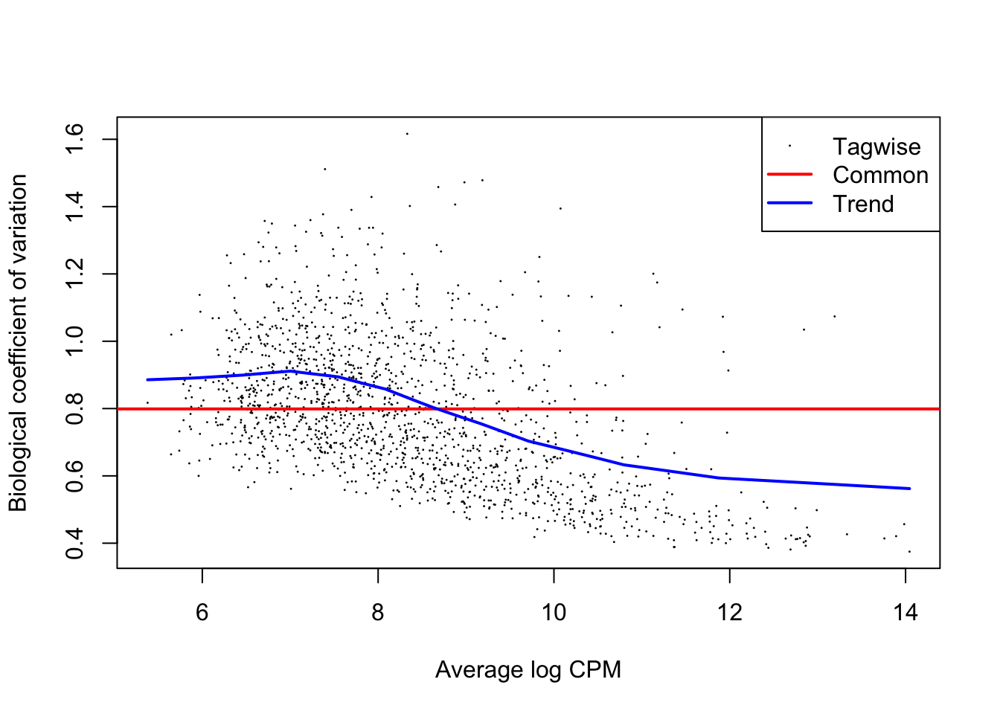
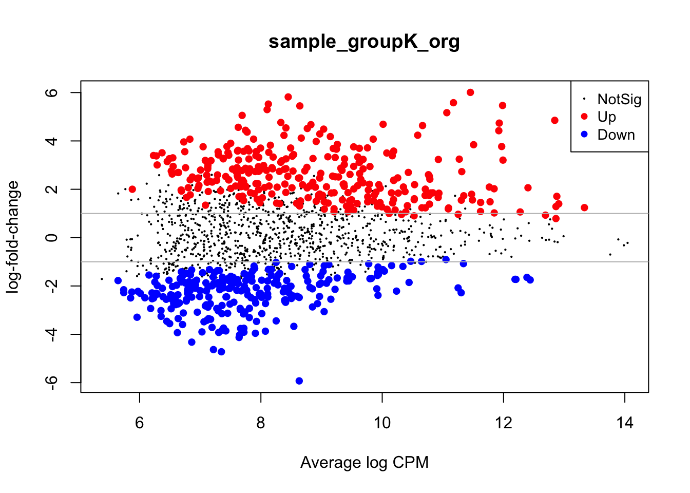
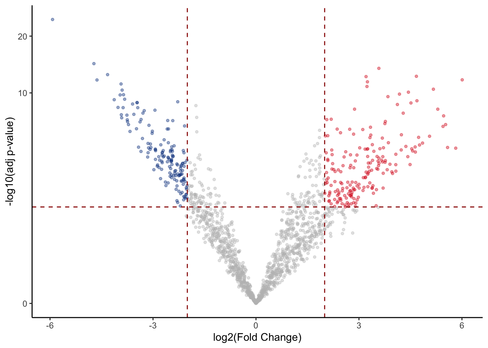
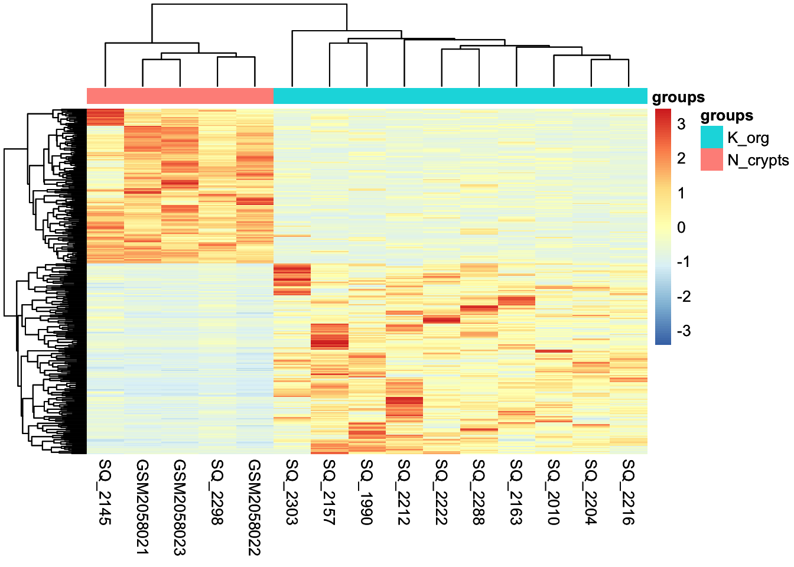
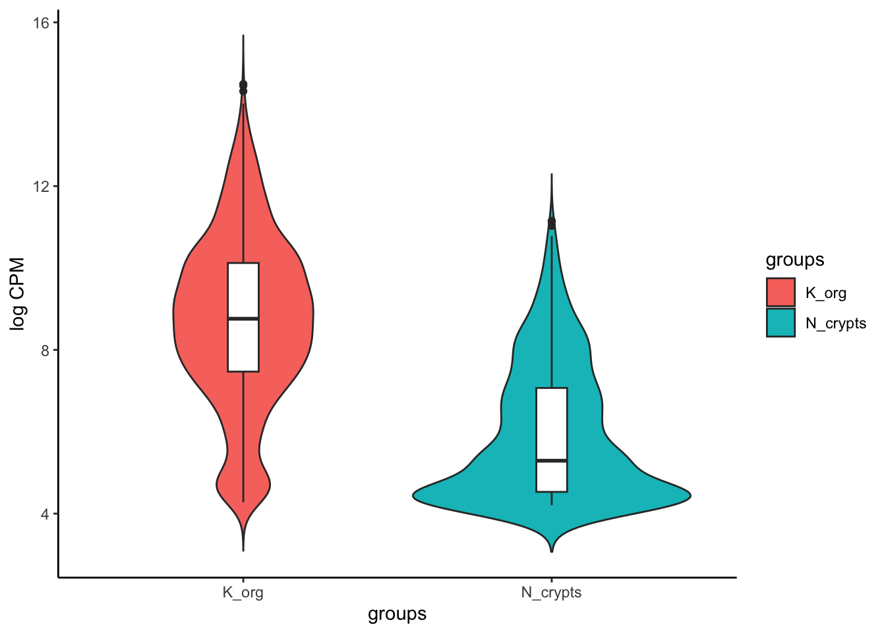
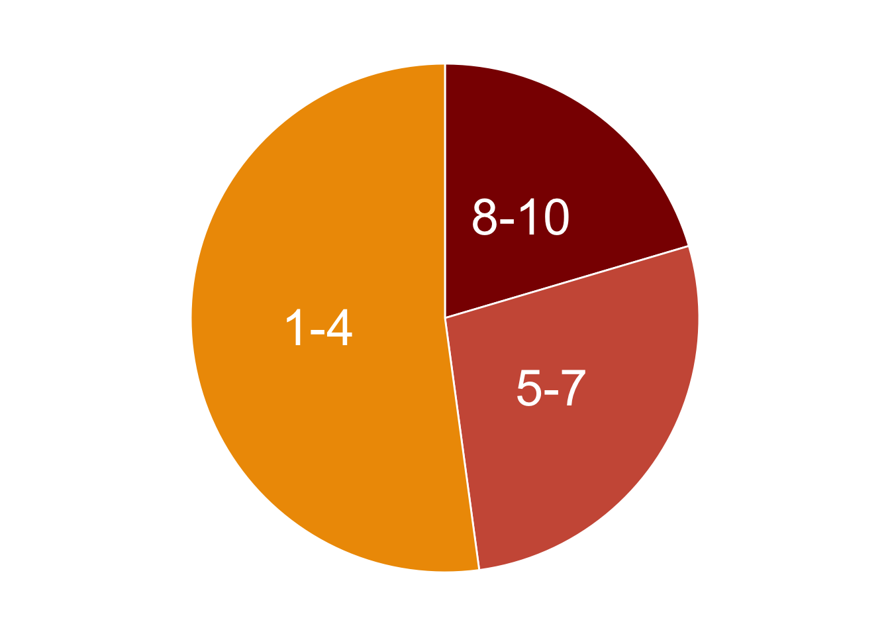
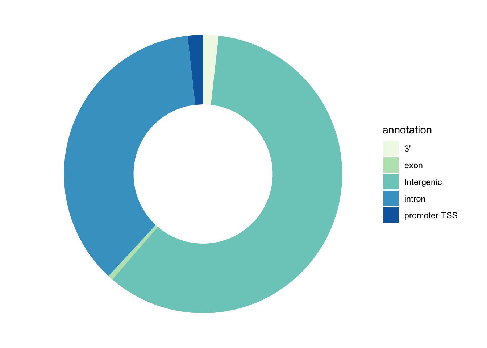
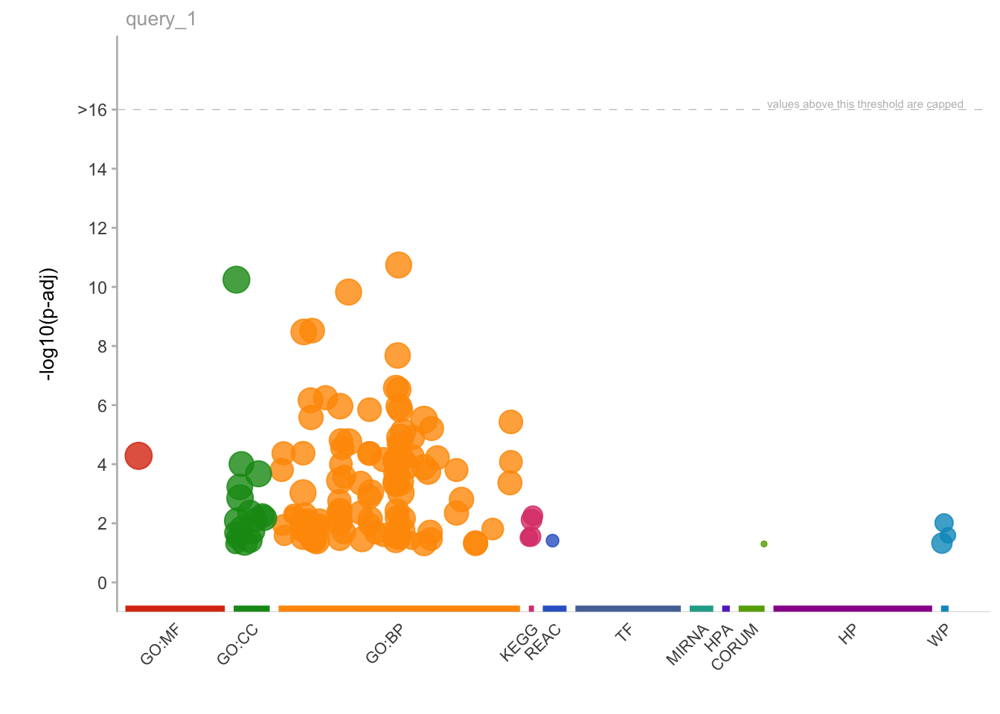
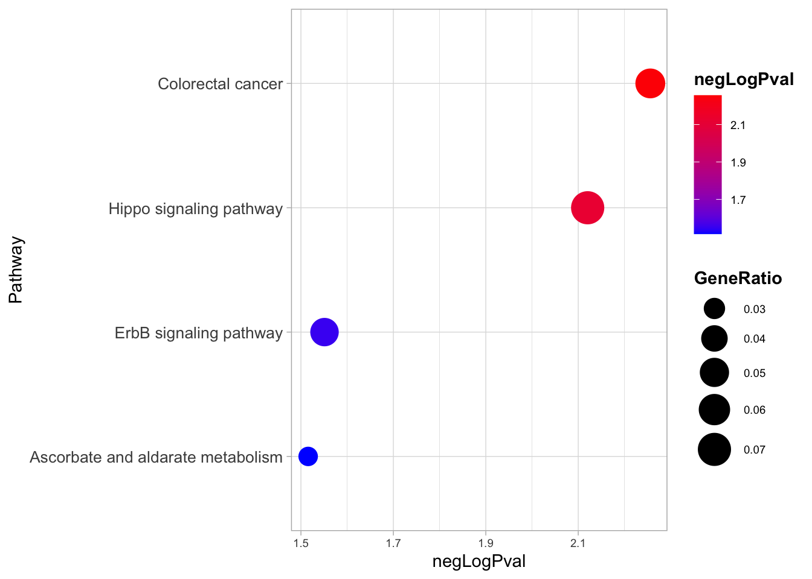

# Design formula that takes into account also variability across patients
~ Patient + TreatmentDay 3
Objetives
- Understand the teory behind differential analysis in ChIP-seq
- Perform differential analysis using
edgeR - Visualize the results
- Perform gene ontology analysis on interesting gene groups
- Perform motif enrichment analysis
Differential analysis
At this point of the workflow, we should know better our dataset we can finally approach differential analysis. The main concept behind it is to contrast tumor from normal organoids and check which enhancer regions are predominantly (defined in a statistical sense) enriched for H3K27Ac in one condition as opposed to the other. Remember that this is a proxy for enhancer activity. We have already given instructions to edgeR on which comparison to perform through the design formula when we created the DGEList object called dds.
In case your dataset has a source of variability due to batch effect or other factors, the desgin formula is the right place where you can define whether you want to correct for these possible uniteresting differences. For instance, if you found that in your dataset part of the variability is due to the different patients from which the biological replicates come from, but you want to assess other biologically driven differences due to a certain treatment, you could modify your design formula in order to check differences due to the treatments, while controlling simultaneously for patient-to-patient variability. In this case, the design formula would be something similar to:
This design formula works ideally if your dataset is paired, that is, there is equal contribution for all the patients to the contrasted condition (i.e., the treatment).
We still don’t know how edgeR interprets the design formula in order to correctly perform the comparison of interest. Our design that we previously built is actually an object of “matrix” data type, which is similar to a data.frame object.
The main difference between matrices and data frames is that matrices store only a single class of data, while data frames can consist of many different classes of dataa. You can also think about matrices as vectors that additionally contain the dimension attribute.
We can inspect more closely the design matrix:
design| (Intercept) | sample_groupK_org |
|---|---|
| 1 | 1 |
| 1 | 1 |
| 1 | 1 |
| 1 | 1 |
| 1 | 1 |
| 1 | 1 |
| 1 | 1 |
| 1 | 1 |
| 1 | 1 |
| 1 | 1 |
| 1 | 0 |
| 1 | 0 |
| 1 | 0 |
| 1 | 0 |
| 1 | 0 |
If we take a look at it we can see how the second column of this matrix is the one related to our comparison of interest, in particular to the tumor condition that we want to compare against the reference group of the normal condition.
The design matrix typically consists of binary values, where ‘1’ represents the samples of interest (tumor condition), and ‘0’ represents the reference group (normal condition). This binary setup allows us to construct a contrast between the two conditions.
The Main edgeR Function
Let’s perform differential expression analysis with edgeR on our dataset using the main function for the task in the package, glmTest(). Without going into the mathematical details, this function fits a generalized linear model (GLM) to the data in order to perform inference and decide which genomic regions have a statistically difference in H3K27Ac signal.
GLMs are an extension of classical linear models to non-normally distributed data, and are used to specify probability distributions according to their mean-variance relationship.
We first need to compute region-wise dispersion estimate with the function estimateDisp(). These are needed by the model in order for its underlying assumptions to hold true. We can visually inspect the fit of the dispersion estimates below.
# First we fit region-wise dispersion estimates to accomodate the theoretical assumptions of the model
dds <- estimateDisp(dds, design, robust=TRUE)
# Plot the fitted dispersion values
plotBCV(dds)
From the dispersion estimate we can see that we are capturing and modelling efficiently the region-wise dispersion in the dataset which is intrinsically present due to variation. This variation is quantified in edgeR with a BCV or a Biological Coefficient of Variation which generally takes into account both unwanted biological variability (that you can specify in the design) and technical variation.
Now that we have estimated dispersion of the data, we can start from the raw count data to assess statistically significant differences.
Therefore, we will not used normalized and transformed data, but we know that
edgeRwill perform internally the normalization when performing the differential testing.
# Fit the GLM
fit <- glmFit(dds, design)
# Perform differential testing given the design formula we wrote previously
lrt <- glmLRT(fit, coef=2)The reason why we specified
coef=2in the code above is because we are referring to the 2nd column of the design matrix, the one contrasting tumor versus normal samples.
Extracting and examining results
After having used the main edgeR function, we can actively explore the results of the analysis for the comparisons of our interest. We can later filter the results based adjusted P-value used to accept or reject the null hypothesis (\(H_{0}\)) of a genomic region NOT being differentially enriched between the two conditions.
With the code below we can extract a table that we call res which contains the results for every single enhancer, stored in separate rows.
# Extract the results
res <- as.data.frame(lrt$table)We can now check out our results object, which will be a data.frame, a table.
# Check out results object
head(res, 10)| logFC | logCPM | LR | PValue | |
|---|---|---|---|---|
| reg_6364 | -1.5423731 | 7.811539 | 4.2079269 | 0.0402355 |
| reg_6365 | -0.3668209 | 8.646372 | 0.7407258 | 0.3894285 |
| reg_6366 | -3.7139760 | 7.194626 | 26.9011205 | 0.0000002 |
| reg_6367 | -3.9579270 | 7.908952 | 40.6804721 | 0.0000000 |
| reg_6368 | -1.1180092 | 6.533408 | 3.5852238 | 0.0582956 |
| reg_6369 | -1.7503185 | 12.439307 | 35.1563108 | 0.0000000 |
| reg_6370 | -0.9238764 | 8.161677 | 1.8083683 | 0.1787041 |
| reg_6371 | -1.7267297 | 12.204573 | 29.8065079 | 0.0000000 |
| reg_6372 | -3.4213174 | 7.107506 | 19.1972258 | 0.0000118 |
| reg_6373 | -0.9786309 | 10.470386 | 5.7130866 | 0.0168389 |
This table shows the log-fold change levels of enrichment/depletion of histone mark in our genomic regions. Keep in mind that a log-fold change of 1 corresponds to a difference in raw gene expression value of 2 times since the log has a base of 2. So, to recap, all of the enhancers with log-fold change of 1 or more are twice as enriched in H3K27Ac in one condition compared to the other and we will later filter regions based on the fold-change value.
Additionally, we can see the Likelyhood Ratio, (“LR”) for each region. This is another statistical measure used in edgeR used to assess significance: higher LR values indicate stronger evidence against the null hypothesis of no difference between conditions.
We can additionally print out a summary of the results of the differential analysis at a P-value < 0.01 by using the following code:
summary(decideTests(lrt, p.value = 0.01)) sample_groupK_org
Down 162
NotSig 1253
Up 166Here we can see (1) the type of comparison we are performing (vs the reference, in our case normal crypts organoids), (2) the number of genomic regions with significantly higher (“Up”) enrichment in tumor organoids and the number of regions with significantly lower enrichment in tumor organoids (i.e., higher enrichment in normal condition).
Visualizing Results With MD Plots
MD plots are used to get a sense of the proportions of up- and down-regulated features between two conditions and the number of counts per million (CPM) of each feature, to check if regions with higher counts are statistically preferred to be also differential.
# Plot the MD Plot
plotMD(lrt)
abline(h=c(-1, 1), col="gray")
With the gray line we indicate a fold-change of +/- 1 which, if you recall, stands for an actual magnitude of change of value 2.
Visualizing results with volcano plots
Results from a differential analysis can actually be visualized in many ways, in order to emphasize different messages of interest within them. One popular way is to associate statistical significance (P-Value) and magnitude of enrichment/depletion (fold change) related to each region in the dataset for the specific comparison we are evaluating.
This is also the way results have been visualized in the paper from our study.
Let’s plot a scatterplot, called “volcano” for the typical vulcanic shape, to summarize the results, also adding some thresholds to P-Values and log-fold changes.
volcano_corr <- res %>%
mutate( threshold=ifelse(logFC >= 2 & PValue < 0.01,"A",
ifelse(logFC <= -2 & PValue < 0.01, "B", "C"))
)
volc_plot <- ggplot(volcano_corr, aes(x=logFC, y =-log10(PValue), color=threshold)) +
geom_point(alpha=0.4, size=1) +
scale_color_manual(values=c( "A"="#D90416","B"="#033E8C", "C"="grey")) +
xlab("log2(Fold Change)") + ylab("-log10(adj p-value)") +
theme_classic() +
theme(legend.position="none") +
geom_hline(yintercept = 2, colour="#990000", linetype="dashed") +
geom_vline(xintercept = 2, colour="#990000", linetype="dashed") +
geom_vline(xintercept = -2, colour="#990000", linetype="dashed") +
scale_y_continuous(trans = "log1p")
volc_plot
Visualizing results with heatmaps
We can also plot differentially enriched regions in the two conditions of our interest using heatmaps. In this case we select genomic intervals based on their significance (P-Value < 0.01) and visualize how their H3K27Ac values change across samples just like we have done earlier.
# Take differential regions
diffs <- rbind(volcano_corr[volcano_corr$threshold == "A",], volcano_corr[volcano_corr$threshold == "B",]) %>% rownames()
# Subset matrix for regions of interest
mtx <- cpm(dds)[diffs,]
# Create another table for annotating the heatmap with colors
df <- as.data.frame(samples[,c("groups"), drop=FALSE])
diff_heat <- pheatmap(mtx, cluster_rows=TRUE, show_rownames=FALSE,cluster_cols=TRUE, annotation_col=df, scale = "row")
diff_heat
Visualizing results with violin and box plots
Last, we can visualize the results by looking at the distribution of counts aggregated across conditions. We can plot the counts specifically for genomic regions up-regulated in tumor compared to normal condition and use a violin plot together with a box plot. The box plot highlights the interquartile range and the median of the data, while the volcano also show the kernel probability density of the data at different values.
# Extract up-regulated regions which correspond to all the dots in the right part of the volcano
up_regions <- rownames(volcano_corr[volcano_corr$threshold == "A",])
# Extract normalized and log-scaled counts for up-regulated regions
up_mtx <- cpm(dds, log=TRUE, normalized.lib.sizes = TRUE)[up_regions,]
# Merge information about samples with the counts in order to group counts based on the condition of interest
merged_long_up_mtx <- pivot_longer(as.data.frame(up_mtx), cols = everything(), names_to = 'id') %>% merge(samples, by.x = 'id', by.y = 0)
# Make the plot with ggplot2
violins <- ggplot(merged_long_up_mtx, aes(groups, value, fill = groups)) + geom_violin(trim=FALSE) +
geom_boxplot(fill='white', width=0.1) +
theme_classic() +
ylab('log CPM')
violins
Further downstream analyses
Once we have our differentially enriched regions, we can perform various downstream analyses to check the functional aspects of the group of regions which are up- or down-regulated in our condition of interest.
Loading tables
For these analyses, we will need to upload additional tables, that have been generated separately by us in order to speed up some computations and save memory. We introduced the content of these files on the first day, here we’ll do a brief recap.
recurrence_chr12.matrix: this is a table where you can find if any of the regions that constitute the consensus set of enhancer regions is identified as enhancer also in the individual samples.Korg_UP_regions_results.txtandNcr_UP_regions_results.txt: these files store the differential analysis results for the entire set of enhancers across all the genome and not only Chr12 and, importantly, the regions listed in these files are annotated to gene symbols (we will talk about genomic region annotation later).
You can upload the files in two ways, either automatically extracting the paths using google.drive package in RStudio, or first downloading from Google Drive and then uploading manually the files in the Cloud.
First method:
recurrence_table <- files[files$name == 'recurrence_chr12.matrix',] %>%
drive_read_string() %>% read.table(text = ., sep='\t')Second method:
Download the file “recurrence_chr12.matrix” from Google Drive, then click on “Upload” and put the file in the cloud. At this point run this command in the console:
recurrence_table <- read.table('recurrence_chr12.matrix', sep='\t')Now we’ll do the same for the other two files:
First method:
tumor_up_res <- files[files$name == 'Korg_UP_regions_results.txt',] %>%
drive_read_string() %>% read.delim(text = ., sep='\t', header=TRUE)
tumor_down_res <- files[files$name == 'Ncr_UP_regions_results.txt',] %>%
drive_read_string() %>% read.delim(text = ., sep='\t', header=TRUE)Second method (after uploading the above files on the Cloud):
tumor_up_res <- read.table('Korg_UP_regions_results.txt', sep='\t', header=TRUE)
tumor_down_res <- read.table('Ncr_UP_regions_results.txt', sep='\t', header=TRUE)Understanding recurrence of enhancer regions across patients
As the paper presenting our studies reports:
“To identify common epigenetic blueprints across the organoid library, we looked at the concordance of tumor-enriched enhancers in the PDOs (Patient-derived Organoids).”
One of the downstream analyses that has been performed on the tumor-enriched enhancers (i.e. the enhancers with significantly higher H3K27Ac signal compared to normal organoids) was aimed at understanding if there is a signature of genomic regions that are highly shared and consistently enriched in the entire library of PDOs, which represent an especially interest subset of regions being the most conserved enhancers.
In order to perform this analysis, we need to start from a binary table that indicates for each genomic region (i.e., the rows), if it called as enhancer in each seprate sample (i.e., the columns). This is our recurrence table:
head(recurrence_table, 5)| SQ_2157 | SQ_1990 | SQ_2010 | SQ_2163 | SQ_2204 | SQ_2212 | SQ_2216 | SQ_2222 | SQ_2288 | SQ_2303 | SQ_2298 | SQ_2145 | GSM2058021 | GSM2058022 | GSM2058023 | Called_Korg | Called_Ncr | |
|---|---|---|---|---|---|---|---|---|---|---|---|---|---|---|---|---|---|
| reg_6364 | 0 | 0 | 0 | 0 | 0 | 0 | 0 | 0 | 0 | 0 | 0 | 0 | 1 | 1 | 0 | 0 | 2 |
| reg_6365 | 0 | 0 | 0 | 0 | 0 | 0 | 0 | 0 | 0 | 0 | 0 | 0 | 1 | 1 | 1 | 0 | 3 |
| reg_6366 | 0 | 0 | 0 | 0 | 0 | 0 | 0 | 0 | 0 | 0 | 0 | 0 | 1 | 1 | 1 | 0 | 3 |
| reg_6367 | 0 | 0 | 0 | 0 | 0 | 0 | 0 | 0 | 0 | 0 | 0 | 0 | 1 | 1 | 1 | 0 | 3 |
| reg_6368 | 0 | 0 | 0 | 0 | 0 | 0 | 0 | 0 | 0 | 1 | 0 | 0 | 0 | 0 | 1 | 1 | 1 |
In order to get the number of PDO samples and normal samples that share each genomic region in the consensus, we need to calculate the row-wise sum of all the ‘1’s in the table. > We have already performed this step for you: you can see the row-sums in the last two columns of the table, named ’Called_Korg’ and ‘Called_Ncr’ respectively for tumor and normal sample counts.
At this point we can use this code to generate a pie chart that illustrates the recurrence of the up-regulated regions across samples.
# Filter the recurrence table for the significantly enriched enhancers in tumor samples and select only the columns with the row-sums
rec_df <- recurrence_table[up_regions,] %>% select(contains("Called")) %>%
# Create a new column that group regions based on the extent of recurrence across samples
mutate(group=case_when(Called_Korg%in%c(1:4) ~ "1-4",
Called_Korg%in%c(5:7) ~ "5-7",
TRUE ~ "8-10")) %>%
# Aggregate regions based on the group
group_by(group) %>% tally() %>% mutate(n=as.numeric(n)) %>%
# Calculate frequencies for each group of regions
arrange(desc(group)) %>% mutate(prop = n / sum(n) *100) %>% mutate(ypos = cumsum(prop)- 0.5*prop )
# Make plot
rec_pie <- ggplot(rec_df, aes(x="", y=prop, fill=group)) +
geom_bar(stat='identity', width=1, color='white') +
coord_polar("y", start=0) +
theme_void() +
theme(legend.position="none") +
geom_text(aes(y = ypos, label = group), color = "white", size=10) +
scale_fill_manual(values=c('orange2','coral3','red4'))
rec_pie
We can print the frequencies as percentages, as we have calculated them in the above code.
rec_df %>% dplyr::select(group, n, prop)| group | n | prop |
|---|---|---|
| 8-10 | 38 | 20.43011 |
| 5-7 | 51 | 27.41935 |
| 1-4 | 97 | 52.15054 |
As we can see from the table, there is a subset of enhancers consisting in 20% of the total number of enhancers in chromosome 12, which are consistently highly enriched in 8-to-10 tumor organoids compared to normal ones (10 is the total number of PDOs). This core set of regions constitute a particularly interesting signature that likely drives the regulation of likely relevant genes in CRC tumor cells.
Annotating genomic regions to genes
Talking about genes, one of the key steps when dealing with genomic features is their annotation to actual genes. Annotating genomic regions to genes involves the process of identifying and labeling specific regions of the genome with the genes they correspond to. More generally, annotating genomic feature to genes helps in the process of understanding the genomic context of genes, including their regulation, and function.
One of the most reliable ways to annotate genomic regions to genes is through experimental techniques that directly measure interactions or associations between genomic elements and genes. Chromosome Conformation Capture (3C) techniques, in particular, can capture physical interactions between distant genomic regions, helping to identify enhancer-promoter interactions and other long-range interactions.
Annotating genomic regions to genes is a complex task that often requires a combination of experimental data and statistical analysis to establish associations.
However, it might be not easy in some cases to retrieve experimental data to annotate genomic regions to genes. In that cases, the best strategy is to associate these regions to nearby genes. The annotation by TSS proximity is an approximation of the reality, but nevertheless is a good starting point for subsequent interpretations of the functional implications derived by the annotation.
For instance, researchers may investigate how regulatory elements affect gene expression, how genetic variants within regulatory regions impact gene function, or how mutations in coding regions lead to changes in protein structure or function.
Enhancer distribution across known genomic features
In our case, the annotation to nearby TSS has been already performed using an external tool called Homer, which allows not only to associate regions to genes, but also to annotate their genomic position with respect to relevant genomic features, like introns, exons, promoter-TSS regions, etc.
We will now check how our upregulated enhancers in tumor organoids are distributed across these genomic features, by plotting another pie chart.
# Subset regions upregulated in chr12
df_anno <- tumor_up_res %>% subset(PeakID %in% up_regions) %>%
group_by(annotation) %>% tally() %>%
filter(annotation!='NA') %>%
mutate(fraction = n/sum(n)) %>% # Compute percentages
mutate(ymax=cumsum(fraction)) %>% # Compute the cumulative percentages (top of each rectangle)
mutate(ymin=c(0, head(ymax, n=-1))) # Compute the bottom of each rectangle
# Make the plot
anno_rect <- ggplot(df_anno, aes(ymax=ymax, ymin=ymin, xmax=4, xmin=3, fill=annotation)) +
geom_rect() +
coord_polar(theta="y") + # Try to remove that to understand how the chart is built initially
xlim(c(2, 4)) + # Try to remove that to see how to make a pie chart
scale_fill_brewer(palette=4) +
theme_void()
# Print plot
anno_rect
Answer to this question: at the level of which genomic regions we can find the majority of our enhancer regions?
Gene Ontology Analysis
Now that we have the enhancers annotated to known human genes, we could perform a plethora of analyses in order to get other biological insights related to gene regulation. One of these is the Gene Ontology Enrichment analysis. We will try to get a more unsupervised look at what kind of biology is happening inside the PDOs and, indirectly, in colorectal cancer cells. We will do this usin the gProfiler package in R.
Gene Ontology is a standardized system for annotating genes with terms describing their biological attributes. These terms are organized into three main categories: Molecular Function (the biochemical activity of the gene product), Biological Process (the broader biological objectives the gene contributes to), and Cellular Component (the location where the gene product is active).
The enrichment is evaluated in this way: a list of genes is compared against a background set of genes (e.g., all genes in the genome) to identify GO terms that are significantly overrepresented in the list of interest.
Statistical tests, such as Fisher’s exact test or hypergeometric test, are commonly used to determine whether the observed number of genes associated with a particular GO term in the gene list is significantly higher than expected by chance.
The output of GO enrichment analysis includes a list of significantly enriched GO terms along with statistical metrics, such as p-values or false discovery rates (FDR).
This information helps to prioritize genes for further study and provides further context to the experimental results!
Now let’s do this in practice!
First of all, we will create a custom function that takes as input a list of genes and automatically run the gProfiler function responsible for calulating the enrichment and also creating two plots: one that generally describes the categories of enriched terms, and another one more specific for enriched pathways from KEGG (aka, Kyoto Encyclopedia of Genes and Genomes).
# Result data.frames will be stored in this object
gprof <- c()
#genes: provide a character vector with gene names
#geneListName: a character identifying the list of genes that will be used to name the data.frame stored in res and to create the pdf
gprofiler <- function(genes, geneListName) {
#Parameters you might want to change:
#ordered_query: if the gene list provideed is ranked
#evcodes: if you want to have the gene ids that intersect between the query and the term
#custom_bg: the gene universe used as a background
gostres <- gost(query =unique(as.character(genes)),
organism = "hsapiens", ordered_query = FALSE,
multi_query = FALSE, significant = TRUE, exclude_iea = FALSE,
measure_underrepresentation = FALSE, evcodes = TRUE ,
user_threshold = 0.05, correction_method = "g_SCS",
domain_scope = "annotated", custom_bg = NULL,
numeric_ns = "", sources = NULL, as_short_link = FALSE)
# Create the overview plot (not interactive)
gostplot <- gostplot(gostres, capped = TRUE, interactive = F)
# Keep only useful columns
gp_mod <- gostres$result[,c("query", "source", "term_id",
"term_name", "p_value", "query_size",
"intersection_size", "term_size",
"effective_domain_size", "intersection")]
gp_mod$query <- geneListName
# Calculate GeneRatio for the dotplot: number of genes intersecting the term/ total number of unique genes provided
gp_mod$GeneRatio <- gp_mod$intersection_size/gp_mod$query_size
# Number of genes within the term / number of all unique genes across all terms (universe)
gp_mod$BgRatio <- paste0(gp_mod$term_size, "/", gp_mod$effective_domain_size)
# Rename columns
names(gp_mod) <- c("Cluster", "Category", "ID", "Description", "p.adjust", "query_size", "Intersection_size", "term_size", "effective_domain_size", "intersection", "GeneRatio", "BgRatio")
# Save the results data.frame in res
gprof[[geneListName]] <<- gp_mod
# Remove possible duplicate terms for plotting
omit_ids <- gp_mod[duplicated(gp_mod$Description), ]
omit_ids_list <- omit_ids$Description
gp_mod <- gp_mod[!gp_mod$Description %in% omit_ids_list,]
go_table_pathways <- filter(gp_mod, Category %in% c('KEGG'))
# Calculate negLog P-Value and rank terms based on this value
go_table_pathways$negLogPval=-log10(go_table_pathways$p.adjust)
go_table_pathways <- go_table_pathways[order(-go_table_pathways$negLogPval),]
# Make dot plot
dotPlot <- arrange(go_table_pathways, negLogPval) %>%
mutate(Description = factor(.$Description, levels = .$Description)) %>%
ggplot(aes(negLogPval, Description)) +
geom_point(aes(color = negLogPval, size = GeneRatio))+
scale_size(range = c(5, 9)) +
scale_color_gradient(low="blue", high="red")+
theme_light()+
ylab('Pathway')+
theme(axis.text.y=element_text(size = 10),
axis.text.x=element_text(size = 7),
legend.text = element_text(size = 7),
legend.title = element_text(face = 'bold'))
# Print on display
return(list(gostplot, dotPlot))
}Now, let’s extract a vector of genes associated to the most recurrent regulatory enhancers up-regulated in tumor samples, and perform the analysis:
# Extract regions with high recurrence (from all chromosomes)
all_enh_recur <- tumor_up_res %>%
filter(padj < 0.05 & log2FoldChange > 0 & Called_Korg >=8)
# Extract corresponding genes
genes_up_recur <- all_enh_recur %>%
filter(!is.na(Gene.Name)) %>%
pull(Gene.Name) %>% unique()We can check the number of genes that we have retrieved. We’ll relate this to the number of regions we start with.
paste("Number of recurrent enhancers:", length(all_enh_recur$PeakID))[1] "Number of recurrent enhancers: 687"paste("Number of genes associated to the recurrent enhancers:", length(genes_up_recur))[1] "Number of genes associated to the recurrent enhancers: 582"💡 Can you make a consideration about the differences between the number of regions and the number of corresponding genes?
We can now run the function created above to obtain our enriched biological pathways.
# Load package
library(gprofiler2)
# Run custom function
gprofiler(genes = genes_up_recur, geneListName = 'genes_up_recur')[[1]]
[[2]]
Here, interestingly, we find that the two most enriched biological pathways are “colorectal cancer” and “Hippo signalling pathway”.
From this insight we can start to generate new hypotheses, like the one tested in the study about the relevance of YAP/TAZ factors, which are indeed key downstream effectors of the Hippo signalling.
💡 GO analyses might highlight very interesting patterns and generate hypotheses, but are many times quite hard to interpret depending also on the biological system we are studying.
Take-home Messages 🏠
Congratulations! You got the end of the course and now hopefully know some crucial aspects of a ChIP-seq analysis workflow! Some of the key concepts that we have explored during the course can enable us to reach some distilled points of interest:
Design your experiments carefully with data analysis in mind!
Data needs to be carefully explored to avoid systematic errors in the analyses!
Plot and Visualize as much as possible!
Not all information is useful, remember that it all depends on the biological question!
Omics outputs are immensely rich and one experiment can be used to answer a plethora of questions!